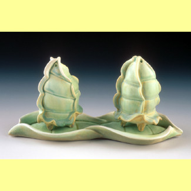

Critique Index
|  | |
|
|
|
Some Words from Kate Maury
Clay serves many functions in my life. As a diligent teacher, it reveals my values, weaknesses and gives insight to what I truly cherish. Forms that capture their moment of creation stand as witnesses to my life's journey. The intimate relationship between maker and object solidifies with each fired piece giving rise to a functional object that freely conveys "my bliss" to the user.
As a potter I follow a long tradition of makers. I find value in this endeavor when the result is something people can use and enjoy in their daily life.
As Critique Moderator I would like to introduce myself. I am an Associate Professor at the University of Wisconsin-Stout where I have taught beginning through advanced ceramics and advanced design since 1994. My education consists of a B.F.A. from the Kansas City Art Institute and a M.F.A. from the New York State College of Ceramics at Alfred University. As you can see from the above images, my work is functional soda fired porcelain.�
I would like to stress that my input may simply be to redirect dialogue or occasionally ask a question to clarify an issue being posed. This part of the site will really depend on your participation. So with that in mind - let's get to it!
Kate Maury

Critique Submission

The Weekly Critique